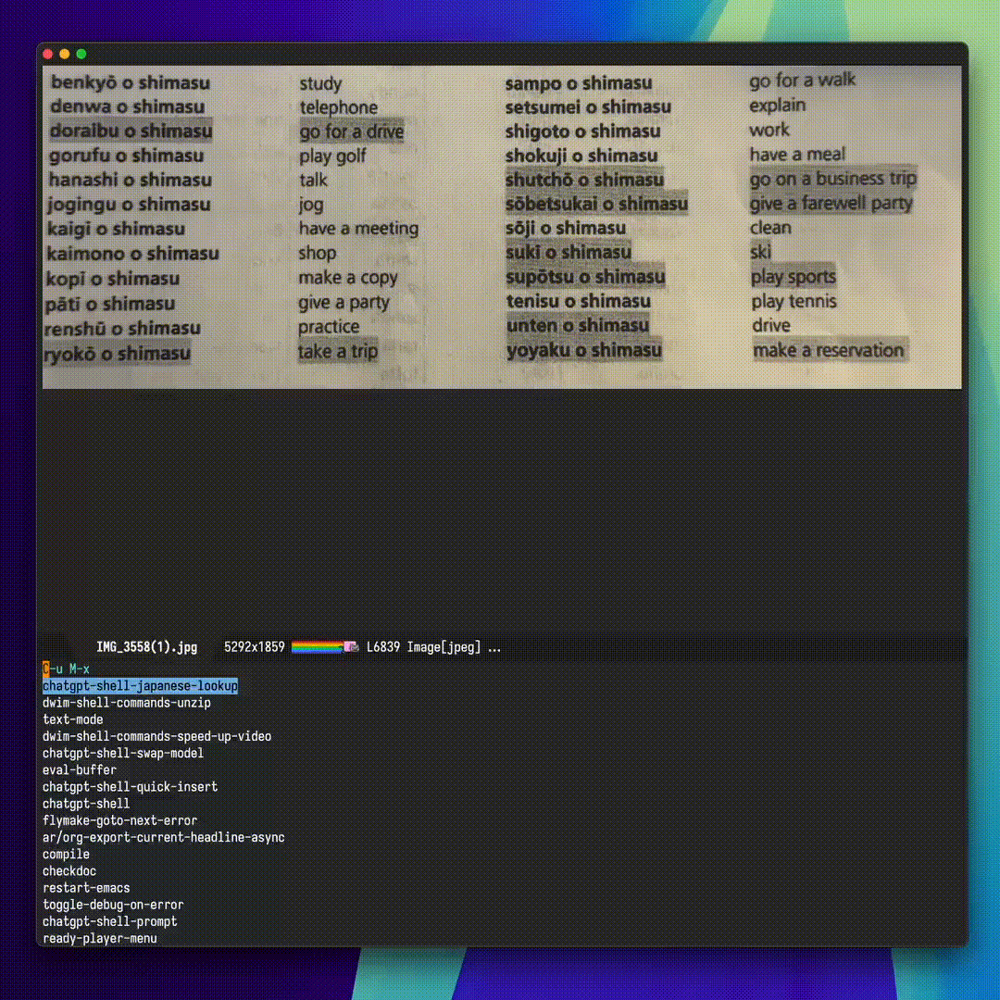
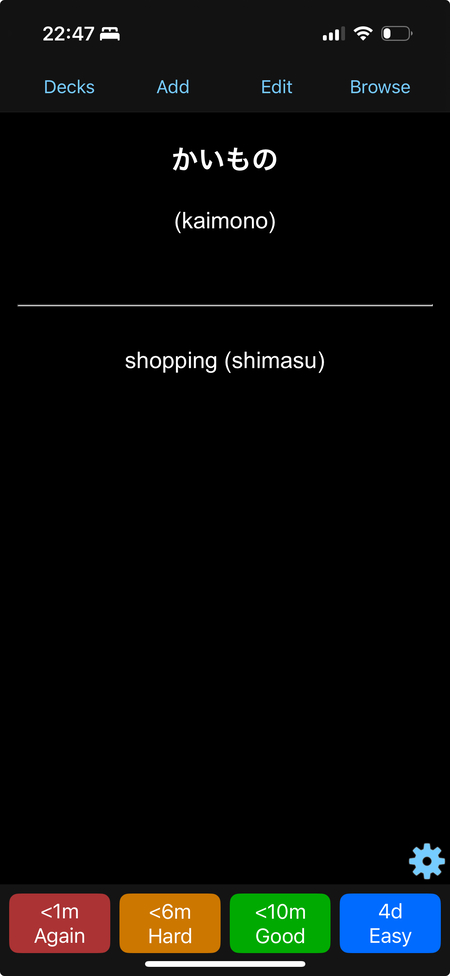

Álvaro Ramírez
A platform that moulds to your needs
Emacs users may be known for bringing in all sorts of diverse workflows into their beloved text editor. From the outside, I get how odd this may seem. We often treat our text editor as a platform of sorts to do our email, web browsing, calendars, project management, chat… the list goes on.
Take email, as an example. Back in 2018 I thought "managing email from Emacs… surely that's crazy-talk", yet I gave it a try just in case. 7 years later and I never looked back. I still use the excellent mu4e client.
As you become more accustomed to Emacs, you may find yourself wishing you could navigate other tasks just as efficiently. But this doesn't happen right away. The editor starts moulding to your needs, initially as you copy others's code/configurations, but this can only take you so far. Emacs truly does mould to your own needs, once you start learning a little elisp.
When comparing elisp to modern languages, one may be tempted to dismiss it as a niche language from another era. While both of those things may be true, its moulding and glueing capabilities remain just as relevant and powerful today, even in the LLM era.
Take a random workflow like extracting vocabulary from a Japanese class paper handout. While it may seem far-fetched for Emacs to handle this, it's actually fairly straightforward with a little elisp glue. Often, this consists of finding some crucial utilities and glueing them up.

Take a screenshot
I'm mostly on macOS, so I can use the built-in screencapture utility to capture the screen and save to a file.
(call-process "/usr/sbin/screencapture" nil nil nil "-i" "path/to/screenshot.png")
Get an LLM to OCR things for ya
These days, there are no shortages of neither large language models nor Emacs clients. I built one: chatgpt-shell, so I feed the screenshot to chatgpt-shell-lookup, giving it a prompt like:
1. Fill out an org mode table using this format as an example: |----------+----------+-------+--------+---------+------| | Hiragana | Katakana | Kanji | Romaji | English | Tags | |----------+----------+-------+--------+---------+------| | | | | | | | |----------+----------+-------+--------+---------+------| 2. Fill out Hiragana or Katakana when appropriate. Never both. 3. Fill out Kanji when appropriate. 4. Show long romaji vowels (i.e. ō). 5. DO NOT use Markdown source blocks. 6. DO NOT add any text or explanations outside the org table.
Be sure to always check LLM output ;)
Let org do its thing
Since I requested org markup from the LLM, I can use org-mode to navigate cells and tweak data as needed. The output I get looks a little something like this:
| Hiragana | Katakana | Kanji | Romaji | English | #Tags | |------------------------+------------+----------------------+----------------------+-----------------------+--------------------| | べんきょう を します | | 勉強 を します | benkyō o shimasu | study | #study | ... | かいもの を します | | 買い物 を します | kaimono o shimasu | shop | #shopping | ...
Sarasa Gothic (detour)
More of a side-note than anything… As a beginner Japanese learner, I quickly discovered I needed a font supporting my new rendering needs. I found Sarasa Gothic Mono, a lovely font (thanks to this Reddit post).
More elisp glue
Now that I got my Japanese vocabulary in org format, I can continue leveraging elisp to glue other things from my target workflow, like iterating over the table and generating a tsv with my new vocabulary:
(while (org-at-table-p) (let* ((front ...) (hiragana (org-table-get-field 1)) (katakana (org-table-get-field 2)) (kanji (org-table-get-field 3)) (romaji (org-table-get-field 4)) (meaning (org-table-get-field 5)) (tags (org-table-get-field 6))) (with-current-buffer output-buffer (insert (format "%s\t%s\t%s\t%s\t%s\t%s\t%s\n" front hiragana katakana kanji romaji meaning (replace-regexp-in-string "#" "" tags))))) (forward-line 1))
べんきょう を します べんきょう を します 勉強 を します benkyō o shimasu study study ... かいもの を します かいもの を します 買い物 を します kaimono o shimasu shop shopping ...
Anki
So where is all this elisp glueing going? Now that I have my new vocabulary in a .tsv table, I can feed it to Anki, the popular spaced repetition app. While there are a handful of existing Anki Emacs packages, converting with an elisp loop was simple enough and gave me lots of freedom on how to structure my cards.
iPhone
Once I got the new vocabulary imported into Anki, I can subsequently sync it over to the iPhone. In some way, you can say that a bit of elisp glue here and there facilitated the entire workflow.
By the way, now you know why there's a random chatgpt-shell-japanese-lookup function included in chatgpt-shell.

Learn elisp
While Emacs and elisp may not be the most fashionable pair, they sure fill a huge void for me. They provide a platform that can easily mould to my specific needs.
If you're an Emacser and have been shying away from learning elisp, do yourself a favour and get your toes dipped. You'll be glad to.
Soon enough, you'll enable workflows that mould exactly to the way you like things to work. In other words, they simply do what ✨you✨ mean ;)